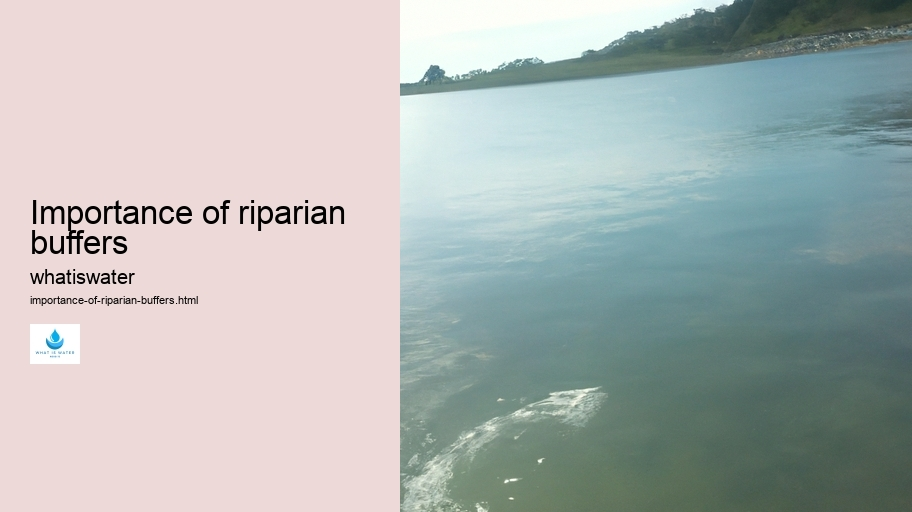

Hydrological Cycle
Hydrological Cycle
Evaporation and transpiration
Condensation and cloud formation
Precipitation and rain patterns
Surface runoff and river systems
Groundwater flow and aquifers
Snowmelt and glacial processes
Water storage in oceans lakes and reservoirs
Soil moisture and infiltration
Water balance and budgeting
Human impact on the hydrological cycle
Marine Ecosystems
Marine Ecosystems
Coral reefs and their biodiversity
Mangrove forests as coastal protectors
Ocean currents and climate regulation
Deepsea habitats and extremophiles
Intertidal zones and estuarine ecosystems
Marine food webs and trophic levels
Freshwater Ecosystems
Freshwater Ecosystems
Conservation efforts for marine species
Marine biogeochemical cycles
Impact of global warming on oceans
Water Resource Management
Water Resource Management
Rivers streams and creeks ecosystems
Lakes ponds wetlands habitats
Biodiversity in freshwater environments
Aquatic plants role in oxygenation
Freshwater fish species diversity
Invasive species impact on freshwater systems
Pollution threats to freshwater sources
Conservation strategies for freshwater biomes
Role of wetlands in flood control
Importance of riparian buffers
Cultural Significance of Water
Cultural Significance of Water
Sustainable water use practices
Desalination technologies for fresh water supply
Wastewater treatment processes
Rainwater harvesting techniques
Management of water during drought conditions
Transboundary water resource politics
Infrastructure for water distribution
Agricultural irrigation efficiency
Urban water demand management
Impact of climate change on water resources
About Us
Contact Us

Importance of riparian buffers
Virtual Water
Riparian buffers are essential ecological features that lie at the interface between terrestrial and aquatic ecosystems, typically along rivers, streams, and lakes.
Cultural Significance of Water
. These vegetated strips of land play a critical role in maintaining water quality, reducing pollution runoff, providing wildlife habitat, and stabilizing stream banks.
The first aspect to consider is water quality. Riparian buffers act as natural filters for sediments, nutrients, and pollutants that might otherwise enter water bodies from agricultural or urban runoff. When rain falls on fields or city streets, it can pick up pesticides, fertilizers, oil, and other contaminants. As this runoff flows through a riparian buffer zone before reaching a stream or river, plants uptake these potential pollutants while sediment is trapped by the vegetation and soil within the buffer.
Another vital function of riparian buffers is erosion control. Strong root systems of native trees and shrubs stabilize soil along waterways. Without these roots holding the soil in place during heavy rains or periods of rapid snowmelt, banks can quickly erode away. This erosion not only leads to loss of land but also contributes additional sediment to the waterway which can harm aquatic habitats and species.
Furthermore, riparian buffers provide invaluable habitat for an array of wildlife species.
Water Rights
Water Softening
Birds use these corridors for migration routes as well as nesting sites; amphibians rely on them as breeding grounds; fish benefit from the cooler waters provided by shading canopy trees; mammals utilize them as travel lanes and sources of food.
Bottled Water
The diverse plant life within these areas supports insects which are crucial for pollination and serve as food for many animal species.
Climate change mitigation is yet another significant advantage offered by riparian zones. Trees in particular sequester carbon dioxide—a greenhouse gas contributing to global warming—thus helping offset carbon emissions from human activities.
In addition to their environmental benefits, riparian buffers have social advantages too.
Molecule
They enhance scenic beauty thereby potentially increasing property values along waterways; they offer recreational opportunities such as fishing, bird watching, hiking; they even help reduce flooding risks by slowing down stormwater runoff thus allowing more time for infiltration into the ground.
Importance of riparian buffers - Water Softening
Molecule
Bottled Water
Water Softening
Water Rights
Water Treatment
Water Scarcity
Despite their importance however many riparian areas face threats due to development pressure agriculture forestry practices among others leading to their degradation removal altogether It's imperative we recognize preserve restore these natural assets if are maintain healthy ecosystems support biodiversity combat climate change protect our own well-being
Efforts toward conservation involve implementing policies creating incentives private landowners engage protection restoration efforts educating public about benefits provided by intact functional riparien zones Ultimately preserving enhancing “buffer” between land water will ensure both continue thrive generations come
Hydrological Cycle
Check our other pages :
Freshwater Ecosystems
Conservation strategies for freshwater biomes
Ocean currents and climate regulation
Precipitation and rain patterns
Desalination technologies for fresh water supply
Frequently Asked Questions
What are riparian buffers, and why are they important for water ecosystems?
Riparian buffers are strips of vegetation along the banks of rivers, streams, or other water bodies. They are crucial for maintaining water quality by filtering pollutants from runoff, providing habitat for wildlife, stabilizing stream banks to prevent erosion, and supporting aquatic ecosystems with shade and organic matter.
How do riparian buffers contribute to reducing pollution in waterways?
Riparian buffers act as natural filters. Plants within these zones trap sediments and absorb nutrients and pollutants before they can enter the water body. Their roots help break down contaminants through microbial processes, thus preventing harmful substances like nitrogen and phosphorus from causing algal blooms that deplete oxygen in the water.
Can riparian buffers mitigate the effects of flooding?
Yes, riparian buffers can help mitigate flooding by slowing down runoff during heavy rain events. The vegetation increases soil infiltration rates and provides resistance to flowing water, which reduces the speed and volume of runoff reaching the stream. This can reduce peak flow levels during floods.
What is the role of riparian buffers in supporting biodiversity within aquatic environments?
Riparian buffers provide diverse habitats for a wide range of species including birds, mammals, insects, amphibians, and fish. The varied plant life supports different food webs both in the terrestrial zone and within the adjacent aquatic ecosystem. By maintaining a healthy buffer zone with native vegetation, we support a rich biodiversity essential for resilient ecosystems.
How does climate change impact the effectiveness of riparian buffers?
Climate change can affect riparian buffers through increased temperatures leading to more intense precipitation events. This may lead to higher flood risks that could overwhelm buffer capacities. Additionally, changes in seasonal flows can disrupt plant growth cycles within these areas. Conserving larger buffer zones and promoting diverse native vegetation might increase resilience against such impacts imposed by climate change.